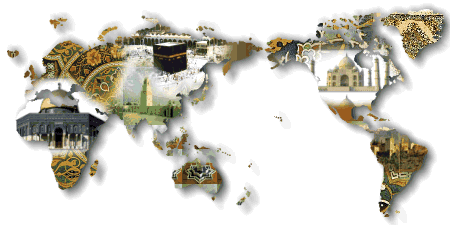

Lyhyt johdatus Islamiin
Kaikki maailman uskonnot on nimetty joko niiden perustajan tai sen yhteiskunnan ja kansan mukaan, jonka piirissä ne ovat syntyneet. Esimerkiksi kristinusko on saanut nimensä profeettansa Jeesuksen Kristuksen mukaan ja juutalaisuus Juudan heimon mukaan (Juudean maassa), jossa se syntyi. Sama pääte muihin uskontoihin. Mutta Islamin kohdalla asia on toisin.
Tällä uskonnolla on se erityispiirre, että se ei samalla tavoin henkilöidy johonkin persoonaan tai tiettyyn kansaan; sana "Islam" ei kerro sellaisesta suhteesta - sillä se ei kuulu millekään tietylle henkilölle, kansalle tai maalle. Se ei ole ihmisaivojen tuotetta eikä se myöskään rajoitu johonkin tiettyyn yhteiskuntaan kuuluvaksi. Se on yleismaailmallinen uskonto, jonka tarkoitus on synnyttää ja kehittää ihmisessä ISLAMin asennetta ja ominaisuuksia.
Sana Islam on itse asiassa määrättyjen ominaisuuksien nimitys. Se, jolla on nämä ominaisuudet, kuuluu hän sitten mihin rotuun, yhteiskuntaan, maahan tai heimoon tahansa, on muslimi. Koraanin (muslimien Pyhän Kirjan) mukaan on kaikkien kansojen keskuudessa kaikkina aikoina ollut hyviä ja oikeamielisiä ihmisiä, joilla oli nuo ominaisuudet - ja jotka kaikki olivat ja ovat muslimeja.
Mitä Islam tarkoittaa?
Islam on arabiankielinen sana, joka tarkoittaa alistumista ja tottelevaisuutta, eli täydellistä antautumista Jumalan johdatuksen varaan. Jotkut käyttävät sanaa "muhamettilaisuus" sanan Islam sijasta, mutta se väärä nimitys Islamille ja loukkaa syvästi sen henkeä. Islamin sanoma ja johdatus on sama, jonka Jumala on paljastanut kaikille profeetoilleen.
"Sano: "Me uskomme Jumalaan, siihen, mitä on ylhäältä ilmoitettu meille ja mitä on ilmoitettu Aabrahamille, Ismaelille, Iisakille ja Jaakobille sekä (Israelin) sukukunnille, siihen, mitä Mooses, Jeesus ja profeetat ovat saaneet Herraltansa; me emme tee mitään eroatusta heidän välillään, ja Hänen tahtoonsa ja johdatukseensa olemme alistuneet".
Se sanoma, joka ilmoitettiin profeetta Muhammedille (SAAS), on Islam sen kaikenkattavassa, täydellisessä ja lopullisessa muodossa. Muhammed (SAAS) on viimeinen profeetta eikä hänen jälkeensä tule Jumalalta enää muuta profeettaa tai lähettilästä. Hänen elämänsä on paras esimerkki meille muslimeille. Hänen välittämänsä sanoma on lopullinen viesti niille, jotka uskovat Jumalaan.
Islam on uskoa ja lakia
Islam uskontona tavataan jakaa kahteen osaan: Yksi osa on usko, johon sisältyy usko Jumalaan, Hänen profeettoihinsa, Hänen kirjoihinsa, enkeleihin, Tuomiopäivään, ja Jumalan "Qadariin", sallimukseen (s.o. että kaikki maailmassa tapahtuu Jumalan rajattoman tiedon, tahdon ja mahdin mukaisesti).
Toinen osa on Sharia (Islamin laki), joka käsittää kolme elementtiä :
- Palvonta ja kuinka se tulee tehdä.
- Moraali ja hyvät menettelytavat.
- Ihmisten välisiä suhteita ohjaavat säännöt, kuten: perhenormit, sosiaalinen turvallisuus, perintölaki, taloudelliset periaatteet, rikoslait ja kansainväliset suhteet.
Ollakseen muslimi, täytyy omaksua molemmat osat, eli sekä usko että Sharia. Lisäksi on uskottava voivansa toimia niiden mukaisesti. Mutta jos muslimi ei noudata jotakin Islamin säännöistä ilman laillista syytä (kuten pakko, hätätilanne, tietämättömyys ja unohdus), sellaista muslimia on pidettävä syntisenä, ilman että hänestä kuitenkaan tulee "ei-muslimia". Kun katuu ja pyytää Jumalan anteeksiantoa, antaa Jumala kaikki synnit anteeksi.
Jumalan kieltäminen tai jonkun/jonkin palvominen Hänen rinnallaan ovat ainoat synnit, joita Jumala ei anna anteeksi Tuomiopäivänä, jos ihminen ei luopunut näistä synneistä eläessään (Koraani 4:48, 4:116). Mutta tämä ei koske niitä, jotka eivät saaneet tietoa Islamin sanomasta tai joiden saama tieto oli virheellistä.
"Totisesti Jumala ei anna anteeksi, että palvellaan jotakuta Hänen vertaisenaan. Hän saattaa antaa anteeksi, kenelle tahtoo, muun kaiken paitsi tämän, sillä se, joka asettaa Jumalalle vertaisia, tekee kauhean synnin."
"Totisesti, Jumala ei anna anteeksi, että jotakuta muuta Hänen rinnallaan jumaloidaan. Kaiken muun paitsi tämän antaa Hän anteeksi kenelle tahtoo, sillä se, joka asettaa jonkun Jumalan rinnalle, on eksynyt äärimmäiseen harhaan."
Oppineet muslimit (Ulama) ovat todenneet, että kaikki asiat ovat pääsääntöisesti Islamin mukaan sallittuja, ja tähän heillä on tukea Koraanista (esim. 2:29, 48:13, 31:20) ja profeetan (SAAS) opetuksista (Sunna).
"Hän on se, joka on luonut teille kaiken, mitä on maan päällä. Sitten Hän nousi taivaaseen ja muodosti sen seitsemäksi taivaaksi; niin, Hän on kaikkitietävä."
"Jos joku ei usko Jumalaan ja Hänen sananjulistajaansa, Me olemme totisesti epäuskoisia varten varannut polttavan tulen."
"Ettekö huomaa, että Jumala on alistanut valtaanne kaikki, mikä on taivaassa ja mikä on maassa, ja siunannut teidät yltäkylläisesti sekä ruumiin että sielun tarpeilla. Mutta ihmisten joukossa on sellaisiakin, jotka kiistelevät Jumalasta, vaikka heillä ei ole tietoa eikä johdatusta eikä mitään valaisevaa kirjaa."
Olisi kohtuutonta, että Jumala on luonut nämä asiat ja hyödykkeet maaillmaan, ja sitten kieltänyt ne. On siis vain joitakin harvoja asioita, jotka Jumala on kieltänyt vahvojen syiden perusteella ja ihmisten hyväksi (Koraani 7:157, 7:32-33, 2:219, 5:4).
"niille, jotka seuraavat tätä lähettilästä, oppimatonta profeettaa, josta he löytävät kuvauksen Toorassa ja Evankeliumissa. Hän tulee vaatimaan heiltä hyviä tekoja ja kieltämään vääryyden, sallimaan heille mikä puhdasta on ja kieltämään saastaisen; hän on vapauttava heidät kuormasta ja kahleista, joihin heidät on kytketty. Jotka uskovat häneen, kunnioittavat ja auttavat häntä sekä seuraavat sitä valoa, joka on lähetetty hänen mukanaan, ne ovat onnellisia."
"Sano: Kuka on kieltänyt Jumalan kauniit vaatteet, jotka Hän on hankkinut palvelijoineen, sekä hyvät ruoat?» Sano: »Ne on tarkoitettu uskovaisille maallisessa vaelluksessaan ja yksinomaan heille - ylösnousemuksenpäivänä.» Näin selitämme tunnusmerkit ihmisille, jotka ymmärtävät. Sano: Seuraavat on minun Herrani kieltänyt: kaiken haureuden, niin julkisen kuin salaisenkin, ja synnin sekä aiheettoman kapinoimisen, sekä sen, että te Jumalan vertaisiksi teette sellaista,jota Hän ei ole asettanut, ja väitätte Jumalalle ominaiseksi sellaista, mitä ette tiedä."
"He kysyvät sinulta, onko viini ja uhkapeli sallittua. Sano: Molempiin sisältyy suuri synti, vaikkakin niistä on joitakin etuja ihmisille ; kuitenkin on synti suurempi kuin hyöty. Vielä he kysyvät, mitä heidän on lahjoitettava pois. Sano: Se, mitä teillä on liikaa. Niin selittää Jumala tunnusmerkit teille. jotta osaisitte miettiä"
"He kysyvät sinulta (Muhammed), mikä heille on (ravinnoksi) sallittua. Sano: (kaikki) hyvät ravintoaineet ovat teille sallittuja. Myös (on teille sallittu) niiden petolintujen saalis, jotka olette riistaa pyydystämään opettaneet aivan kuin koiranne. Jumalan teille neuvoman taidon mukaan; syökää mitä ne pyydystävät teille, tehkää se Jumalan nimeen ja jumalanpelossa. Katso, Jumala on nopea vaatimaan tilille."
Historiallinen näkökulma
Profeetta Muhammed (SAAS) syntyi vuonna 570 ajanlaskumme mukaan Mekassa Arabiassa. Hän sai ensimmäisen ilmestyksensä ollessaan 40-vuotias. Heti alettuaan levittää Islamin sanomaa hänestä ja hänen seuraajistaan tuli vainottuja ja he saivat kärsiä vaikeita koettelemuksia. Siksi Muhammed (SAAS) sai Jumalalta kehotuksen muuttaa Medinaan, toiseen arabialaiseen kaupunkiin. Hän suoritti loppuun profeetan tehtävänsä 23 vuoden ajanjaksona ja kuoli 63 vuoden ikäisenä. Profeetta Muhammed (SAAS) haudattiin Medinaan. Hän ei jättänyt jälkeensä mitään rikkauksia tai muuta omaisuutta. Hänen elämäntapansa oli täydellisen hyvä ja se onkin esimerkkinä jälkeenpäin eläville. Hänen elämänsä tapahtumat valaisevat Koraanin opetusten tarkoitusta ja sisältöä käytännössä.
Islamin viisi pilaria
Kaikki teot, jotka tehdään tietoisena siitä, että ne ovat Jumalan tahdon mukaisia ja siinä tarkoituksessa, ovat Islamissa Jumalan palvontaa. Viidestä pilarista muodostuu perusta, jolle hengellinen elämä rakentuu.
- Shahada (uskontunnustus): "Todistan, ettei ole muuta Jumalaa kuin Allah ja todistan, että Muhammed on Jumalan sanansaattaja. "
- Salat (rukoukset): Ne suoritetaan viidesti päivässä. Rukoukset vahvistavat ja edistävät uskoa Jumalaan ja inspiroivat ihmistä pyrkimään kohti korkeampaa moraalia ja täyttämään velvollisuutensa muslimina sillä tavoin, kuin Jumalan antamat ilmestykset Koraanissa ja profeetta Muhammedin (SAAS) esimerkki kehottavat. Rukoukset puhdistavat sydäntä ja auttavat kontrolloimaan haluja ja kiusauksia toimia väärin tai tehdä pahaa.
- Zakat (almut) on vuosittainen "vero" kunkin omaisuudesta, joka annetaan hyväntekeväisyytenä tarvitseville.
- Saum (paasto): Paasto kuuluu Ramadan-kuukauteen, joka on islamilaisen kuukalenterin yhdeksäs kuukausi. Tänä kuukautena muslimit pidättäytyvät ruuasta, juomasta ja seksuaalisesta kanssakäymisestä aamunsarastuksesta pimeyden laskeutumiseen asti. Ramadan on todellinen "pyhä kuukausi", joka poikkeaa muista vuoden kuukausista. Päivisin on rauhallista ja kaduilla vähän väkeä. Monin paikoin muslimimaissa ravintolat ovat kiinni. Mutta yöt ovat sitäkin vilkkaampia. Moskeijat täyttyvät ihmisistä, jotka suorittavat "tarawihia", erityisiä Ramadanin aikana tehtäviä rukouksia. Viimeisten kymmenen päivän aikana moskeijoihin kerääntyy vielä enemmän ihmisiä. Yhdeksi näistä öistä sattuu Laylat al qadr, "voiman yö", jolloin palvonnan arvo on erityisen suuri. Juuri tuona yönä Koraani ilmestyi profeetalle Jumalalta enkeli Gabrielin välityksellä.
- Hajj (Pyhiinvaellus): Muslimit tekevät joitakin päiviä kestävän pyhiinvaelluksen Mekkaan suorittaakseen ne pyhiinvaellusriitit, jotka määrätään Koraanissa ja joista kertoo profeetta Muhammedin (SAAS) perimätieto. Tämä tapahtuu islamilaisen vuoden 12. ja viimeisenä kuukautena. Pyhiinvaellus kerran elämässä on jokaisen muslimin velvollisuus, joka siihen kykenee. Mekassa on pyhä Kaaba, muslimimaailman keskus.